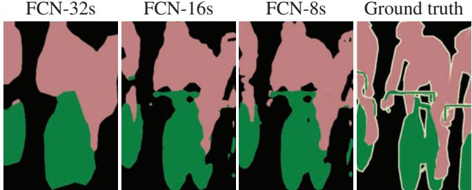
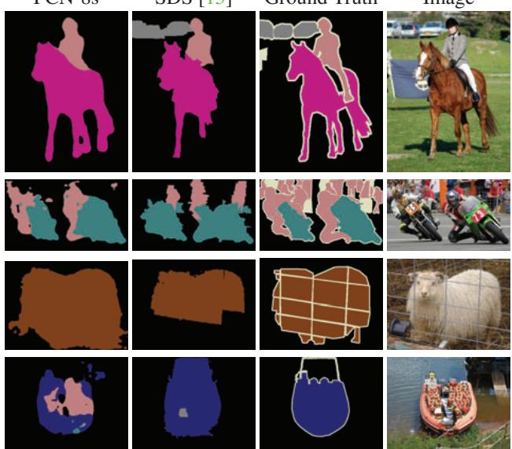
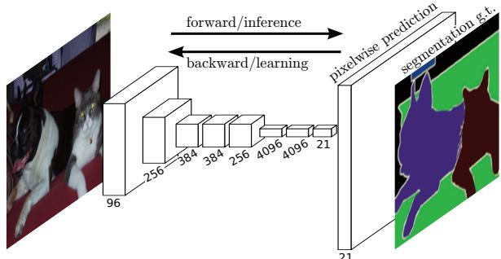

原图注（Fig. 2）：Transforming fully connected layers into convolution layers enables a classification net to output a heatmap. Adding layers and a spatial loss (as in Figure 1) produces an efficient machine for end-to-end dense learning. 怎么看这张图：上图是原来的分类网络，末尾被压成一根向量；下图是把最后几层全连接换成卷积之后的样子——输出不再是一根向量，而是一张小网格（热力图），网格上每个位置都带着类别打分。你要盯的正是「输出形状」这一处的变化：从「一根竖条」变成「一张二维图」，空间维度就这么回来了。 要记住的一句话：把全连接层当卷积用，输出就从「一个答案」变回「一张有位置信息的图」。
粗热力图（比如 10×10）要变回原图尺寸，得放大。原文的做法是用反卷积（backwards strided convolution）做这件事，并且把它作为一个可学习的层塞回网络内部。原文给了一句很关键的话：上采样 f 倍，等价于「用一个输入步长为 1/f 的卷积」。这一手的重要性在于——只有把上采样放进网络里，逐像素的损失才能一路反传回去，整个网络才能端到端训练。
还有一句容易被忽略的：这个反卷积不必固定成双线性插值，原文说 the deconvolution filter in such a layer need not be fixed … but can be learned——它是学出来的。
顺便说一句，论文还试验并放弃了两条路，如实记一下：一是 shift-and-stitch（输出变密了，但代价是 f² 倍计算，而且滤波器并看不到更细的尺度）；二是直接降低 pooling 的 stride（对 VGG16 会把 fc6 的核撑到 14×14，原文承认 we had difficulty learning such large filters）。
改动 (c)：skip architecture —— 这一节请务必读完
很多入门材料讲到 (a) 就停了，只把它记住成「一个把 fc 换成 conv 的小技巧」。那样会漏掉 FCN 真正值钱的东西。
原图注（Fig. 3）：Our DAG nets learn to combine coarse, high layer information with fine, low layer information. Pooling and prediction layers are shown as grids that reveal relative spatial coarseness, while intermediate layers are shown as vertical lines. First row (FCN-32s): Our single-stream net, described in Section 4.1, upsamples stride 32 predictions back to pixels in a single step. Second row (FCN-…（原文图注在此处截断） 怎么看这张图：读法很简单——每一行就是一条「融合到多浅」的路线。第一行 FCN-32s 只有一条单行道，把 stride 32 的预测一步放大回像素，最粗；第二行往下多接了一条从 pool4 来的线（FCN-16s）；第三行再多接一条从 pool3 来的线（FCN-8s），最细。图中那些「网格」画的是池化层与预测层的相对粗细，「竖线」画的是中间层。你要盯的是分支数在一行一行地增加——每增加一条从更浅层来的线，输出就细一分。 要记住的一句话：FCN 的精度不是靠更深的网络，而是靠把更浅层的细节一级一级接回来。
这张图在画什么：左侧上下两个格子分别代表「深层 pool5 的预测」与「浅层 pool3 的预测」。上面那张网格粗（每格盖住原图一大片），语义对但边界糊成大方块；下面那张网格细（每格只盖住一小块），边界清楚但语义弱。中间一个加号把两者加起来，右边得到「又准又细」的融合结果。底部三个小卡是 FCN-32s / FCN-16s / FCN-8s 的三组数字。 怎么看这张图：① 先比较左上的粗网格与左下的细网格——它们各自缺什么，一眼就看得出来；② 再看中间那个 加号——skip architecture 的全部动作就是「把浅层的预测加回深层的预测上」，一共加了两次（pool4、pool3），所以才叫 FCN-16s 与 FCN-8s；③ 最后看底部数字：59.4 → 62.4 → 62.7，涨得最多的是第一次融合，第二次只涨了 0.3，这就是原文自述「边际收益递减」的由来。 要记住的一句话：「深层语义 + 浅层细节」才是 FCN 真正传下去的东西——只讲 fc→conv 等于只讲了一半。

原图注（Fig. 4）：Refining fully convolutional nets by fusing information from layers with different strides improves segmentation detail. The first three images show the output from our 32, 16, and 8 pixel stride nets (see Figure 3). 怎么看这张图：这是上面那张示意图的「实物验证」。从左到右依次是 stride 32、16、8 三张网络的输出，请盯着物体边缘看：最左边那版的边缘是锯齿状的、大块大块的；越往右，边缘越贴合真实轮廓。这张图是「融合真的有用」最直接的证据，也是上一张图里那三个数字的可视化版本。 要记住的一句话：逐级把浅层接回来，换来的就是边界从「方块拼的」变成「贴着轮廓的」。
互动判断
有人说：「FCN 的贡献就是把全连接层换成卷积层。」这个说法为什么不够？
4. 损失函数与关键数字
FCN 的损失特别朴素，但正因为朴素，它才讲清了「在整张图上做 SGD」是什么意思。原文没有排版出逐像素损失的完整公式，只说了一句 We train with a per-pixel multinomial logistic loss（用逐像素的多项式 logistic 损失训练）。它唯一给出的公式化表述是这样一条「损失对空间求和」的性质：
融合的边际收益递减。FCN-8s 之后，原文说 our fusion improvements have met diminishing returns，所以没有继续融合更浅的层。
单独用 pool4 学效果很差。增益来自「融合」这件事本身，不是「多了一层」。
降 stride 这条路对 VGG16 走不通。pool5 的 stride 改成 1 会让 fc6 的核变成 14×14，原文承认 we had difficulty learning such large filters。
数据增强没用。镜像加 32 像素抖动，原文说 yielded no noticeable improvement——这在当年算是反直觉的负面结果。
GoogLeNet 版分割反而差。只有 6M 参数，却只有 42.5 mean IU。原文的原话是：Despite similar classification accuracy, our implementation of GoogLeNet did not match the VGG16 segmentation result——分类准不代表分割准。
最直观的失败案例：把船上的救生衣看成人。原文 Figure 6 第四行就摆着这个例子，原话 the net sees lifejackets in a boat as people。
这就是为什么到了第八季，SLAM 论文做语义建图时几乎都在前面加一道或几道别的关卡——多视角几何一致性、深度一致性、或者干脆让语义和几何互相校验。零件不完美，所以 SLAM 要加几何约束。这句话是本季的一条暗线，后面每一课都会以不同的方式碰到它。
还有一处原文自己承认的错误，顺手记下（诚实标注）：致谢里写着「感谢 Wei Liu 指出我们 SIFT Flow mean IU 计算的一个问题，以及 frequency weighted mean IU 公式中的一个错误」。也就是说，这篇论文的表格里确有一处公式错误是作者自己承认的。这不是贬低，而是提醒你读老论文时对表格数字保持一点警觉。

原图注（Fig. 6）：Fully convolutional segmentation nets produce state-of-the-art performance on PASCAL. The left column shows the output of our highest performing net, FCN-8s. The second shows the segmentations produced by the previous state-of-the-art system by Hariharan et al. [15]. Notice the fine structures recovered (first row), ability to separate closely interacting objects (second row), and robustness…（原文图注在此处截断） 怎么看这张图：左边一列是 FCN-8s 的输出，第二列是当时的前 SOTA（Hariharan 等）。图注点出了三处可比的优点：第一行能恢复细结构、第二行能把紧挨着互相影响的物体分开、第三行是鲁棒性。这张图请务必看到最后一行——那里就是原文自述的失败案例：船上的救生衣被当成了人。这张图因此有两重身份：既是 FCN 的成绩单，也是它的自我检讨。 要记住的一句话：同一张图里既有「细结构恢复得漂亮」，也有「救生衣被当成人」——这就是一个零件的真实水平。

原图注（Fig. 1）：Fully convolutional networks can efficiently learn to make dense predictions for per-pixel tasks like semantic segmentation. 怎么看这张图：这是全篇的「封面图」：输入是真实照片，输出是一张逐像素涂好类别的图，中间没有抠块、没有候选框、没有 CRF 后处理。盯住输入和输出的尺寸关系——它们是一样大的。这正是本课的核心承诺：尺寸进、尺寸出，每个像素都有答案。 要记住的一句话：「逐像素预测」这张牌，是 FCN 第一个打成体系的。
6. 和前面课程怎么接：这个零件在前八季出现过的地方
本季的性质是「补名词」——这些零件不产生 SLAM 方法，但前八季的论文里到处在引用它们。所以每一课都必须回答一个问题：这个零件，你在前面哪节课、哪个方法里见过它，当时它被用来做什么，又出了什么毛病。FCN 的答案是这样的三处。
原话：The mask branch is essentially a small FCN network for pixelwise mask prediction.（掩码分支本质上就是一个小小的、做逐像素掩码预测的 FCN。）这句话把 FCN 与 Mask R-CNN 的关系一次说透了——一九二课那条「第三条分支」，血缘就在这里。
还要补一条横向的提醒。第九季 0180 讲 TUM 数据集时立了一条纪律：看到轨迹误差，先问真值有多准。语义分割这边有一条平行的纪律：看到 mean IU 或 mAP，先问 IoU 阈值是多少、真值标得有多细。